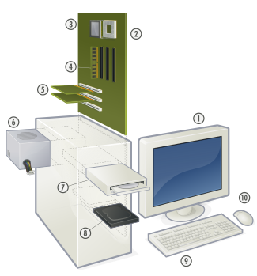
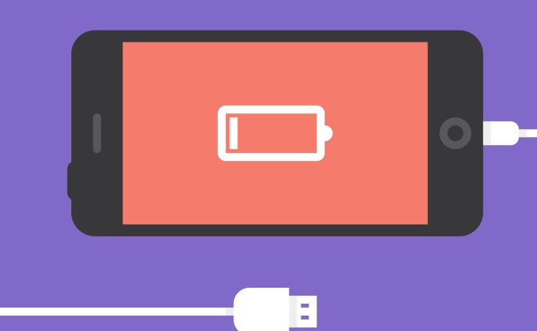
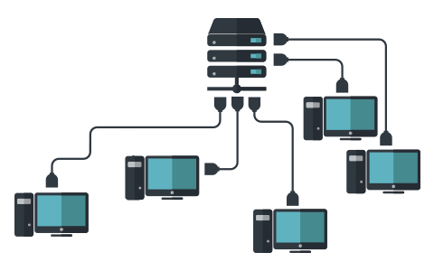
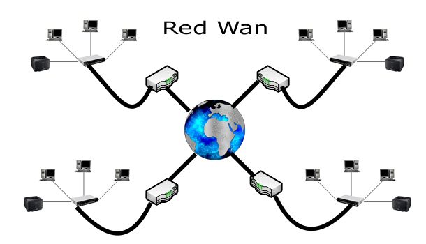

Que sabe mi Navegador Web?
Identificador de usuario por medio de JavaScript
Dispositivo
Sistemas

Hardware

Bateria
Vibración
Redes Sociales
Ubicación
Sensores
Nivel de Luz
Información Red

Escaner de Red LAN

Escaner de Red WAN
Aclaración